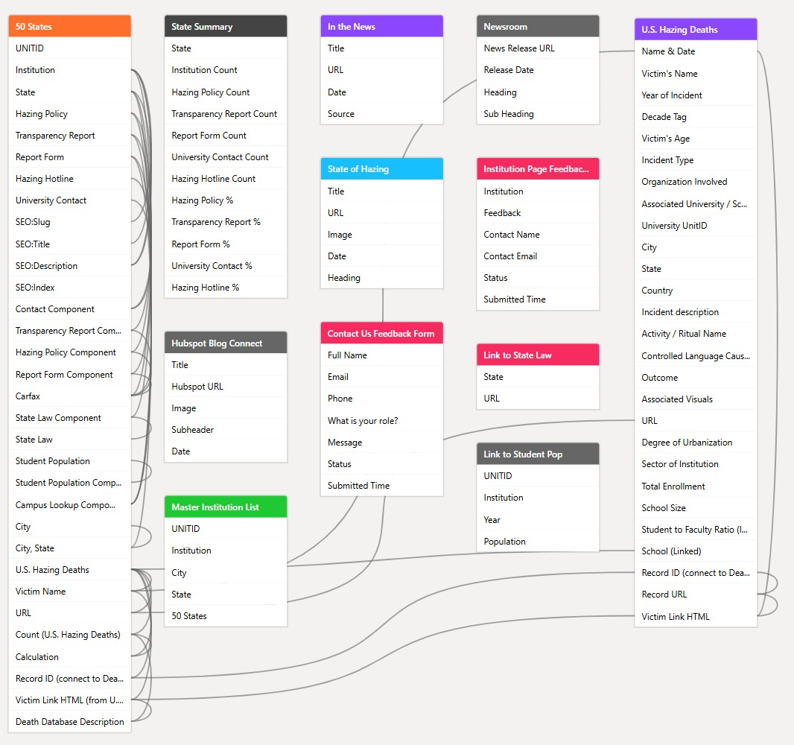
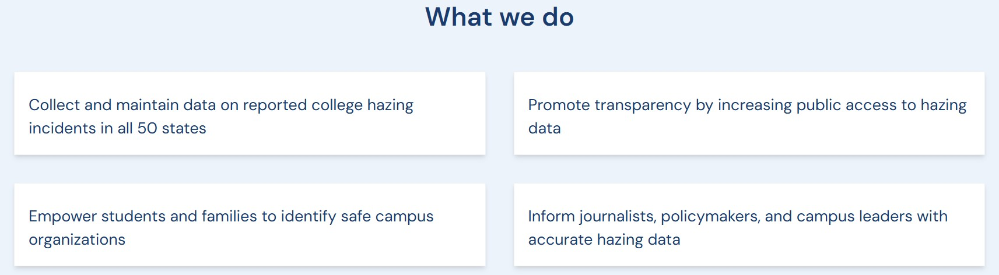
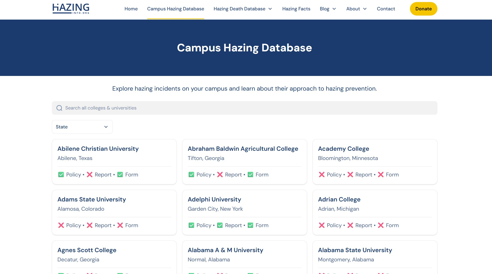
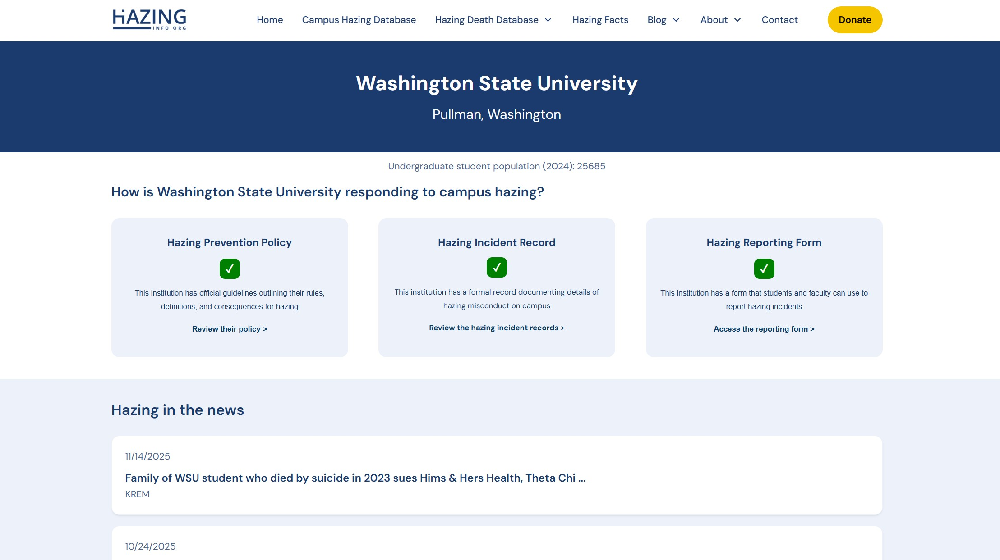

Project Overview
HazingInfo.org is a national transparency and accountability platform that collects, structures, and publishes data on reported college hazing incidents and institutional prevention practices across all 50 U.S. states.
The platform supports students, families, journalists, researchers, and policymakers by making hazing-related information publicly accessible, standardized, and searchable.
Database Architecture & Core Data Model
At the core of HazingInfo.org is a relational database designed to normalize, validate, and connect multiple sources of hazing-related data across institutions, states, and time periods.
Primary Transparency Indicators
- Hazing Prevention Policy — official institutional policy outlining definitions and consequences
- Transparency / Incident Report — public disclosure of hazing incidents or outcomes
- Hazing Reporting Form — accessible mechanism for reporting incidents
- University Contact — designated office responsible for hazing prevention
- Hazing Hotline — anonymous or direct reporting hotline

What We Do

HazingInfo.org improves transparency, accountability, and safety in higher education by making hazing-related information accessible and comparable.
- Collect and maintain national hazing data
- Increase public access to institutional reporting
- Empower students and families to make informed decisions
- Support journalists, researchers, and policymakers
Platform Experience


Goals
- Create a centralized national hazing transparency resource
- Standardize inconsistent institutional reporting practices
- Enable cross-institution and cross-state comparisons
- Support advocacy, research, and policy development
My Role
Project Assistant — Data Architecture & Platform Operations
I worked as part of a cross-functional team of legal researchers, policy experts, developers, and academic partners. My primary responsibility was designing and maintaining the data architecture that supported institutional transparency tracking.
Key Contributions
- Designed and maintained the relational database schema
- Standardized the five core transparency indicators
- Built workflows for data validation and updates
- Coordinated with technical, legal, and academic stakeholders
- Integrated external data sources and institutional feedback
Process & Solution
The project began with an audit of institutional hazing policies and public reporting practices, followed by schema design focused on normalization and scalability.
The platform evolved through iterative development, responding to new data sources, institutional feedback, and user needs.
Outcome & Next Steps
HazingInfo.org is now a live national resource used by journalists, researchers, and advocacy organizations.
Future work includes expanding incident-level data coverage and improving longitudinal trend analysis.
Key Takeaways
- Ethical data design is essential for public-interest technology
- Transparency frameworks can influence institutional behavior
- Clear data modeling improves trust and usability